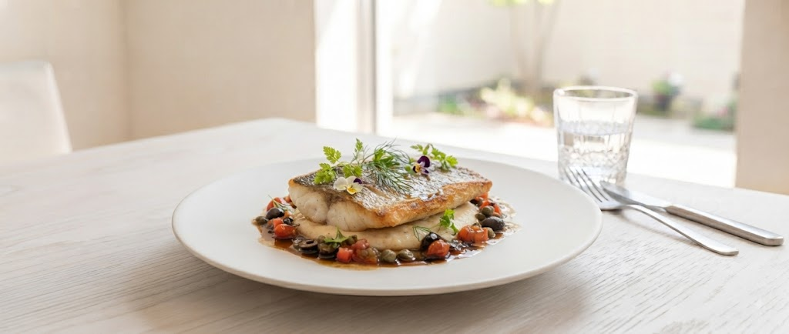

Owner Chef
土黒 修二
名門「ひらまつ」で磨いた、
南仏料理の再解釈。
2019年からSIOのシェフを務め、2021年に伝統を継承。東京の星付きレストランで培った確かな技術と、北海道の豊かな食材が出会い、ここでしか味わえない「SIOのフレンチ」が完成しました。
20+
Years Experience
1,000+
Anniversaries

菜園直送の旬野菜と、五感を揺さぶる
「ヒラメのポワレ」に心奪われる。
※記念日プレートを無料プレゼント中
お誕生日や結婚記念日など、大切な日を彩る
「特別メッセージプレート」のクーポンを今すぐお届けします。
※ボタンをクリックすると公式アカウントが開きます
表面はパリッと香ばしく、中はふっくらしっとりと。火入れの瞬間にこだわり抜いた、当店を象徴するメインディッシュ。素材の味を引き立てるソースとともに。
オーナーシェフ自ら長年の縁で結ばれた菜園から届く、その日の朝に採れたばかりの旬野菜。北海道の力強い大地を感じる瑞々しさをお届けします。
SIOが今後お届けする新たなおもてなしの取り組み
お食事された方へ、その日の食材が育った菜園のストーリーや生産者の想いにアクセスできる限定カードをプレゼント。
収穫体験やシェフコラボイベント、菜園直送野菜の限定直営情報を優先案内。店舗を飛び出した特別な食体験へ。
料理の「背景」まで愉しむことで、四季折々の食材の変化とともに何度でも足を運びたくなるリピート体験を創出します。
Owner Chef
土黒 修二
2019年からSIOのシェフを務め、2021年に伝統を継承。東京の星付きレストランで培った確かな技術と、北海道の豊かな食材が出会い、ここでしか味わえない「SIOのフレンチ」が完成しました。
20+
Years Experience
1,000+
Anniversaries
お二人の新しい門出を祝う、特別なディナーに。
一年に一度の誕生日を、最高の料理とサプライズで。
美食家の方々を唸らせる、独創的な一皿体験を。
「円山公園で、最高に美味しい時間を。」
WEB予約限定：バースデープレートをプレゼント
● 本LPから公式LINE登録、またはWEB予約時に利用可能
● メッセージ内容の事前リクエスト対応
● サプライズ演出のご相談も承ります